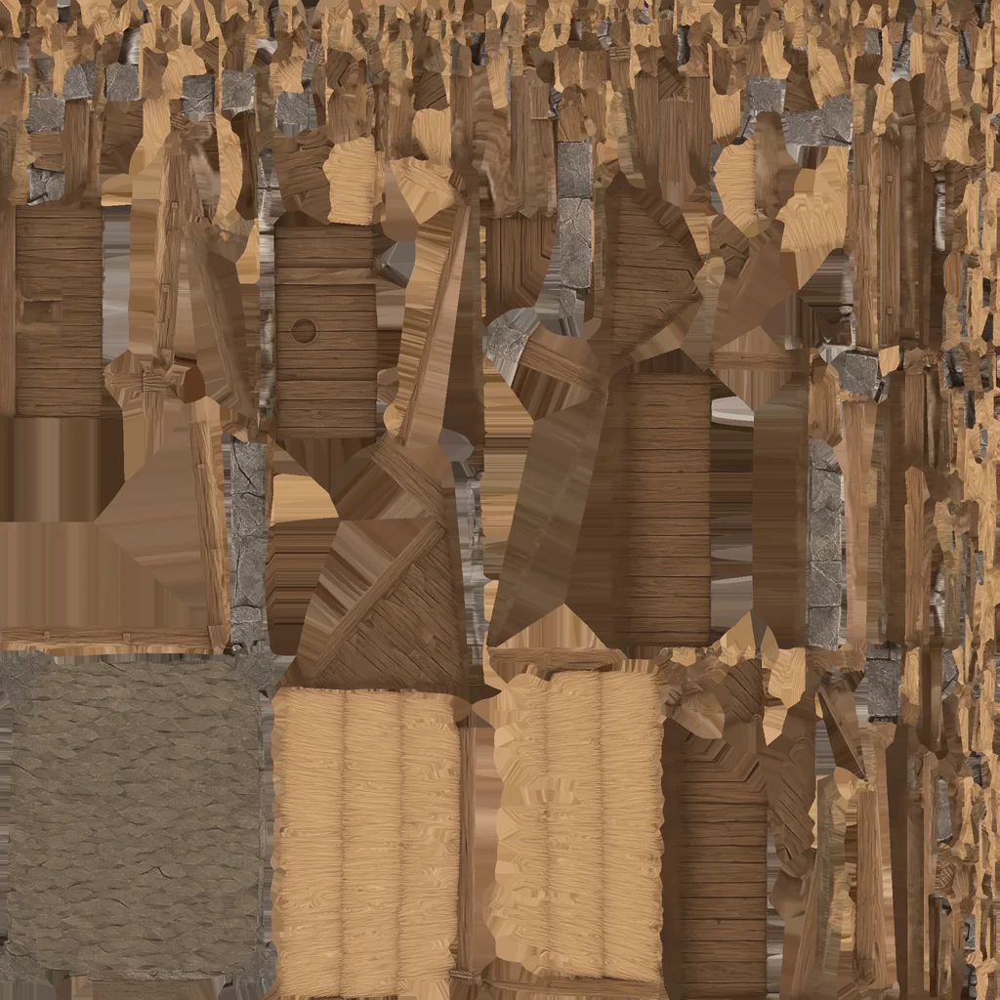
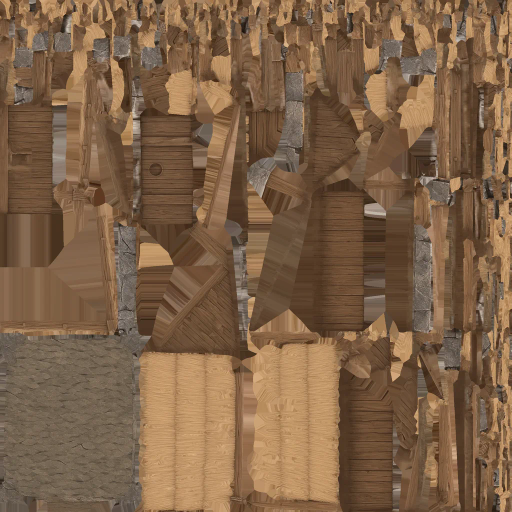
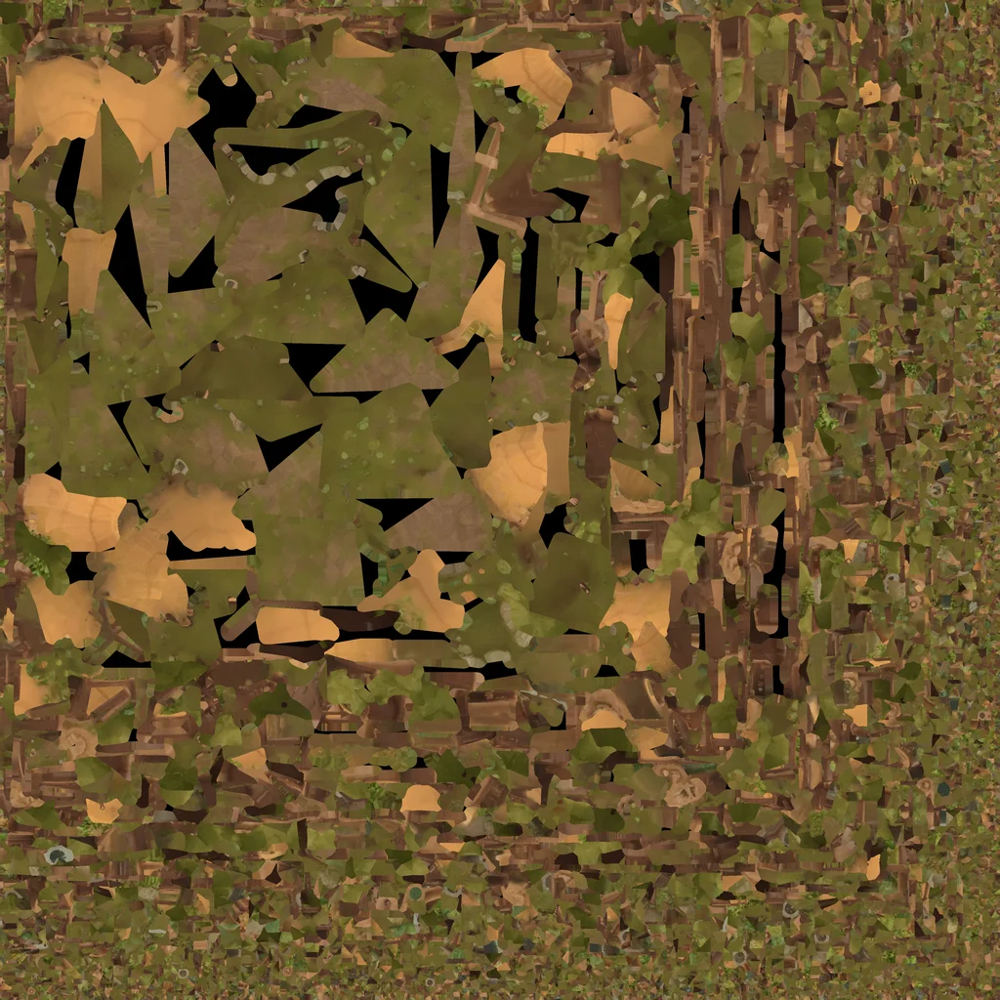
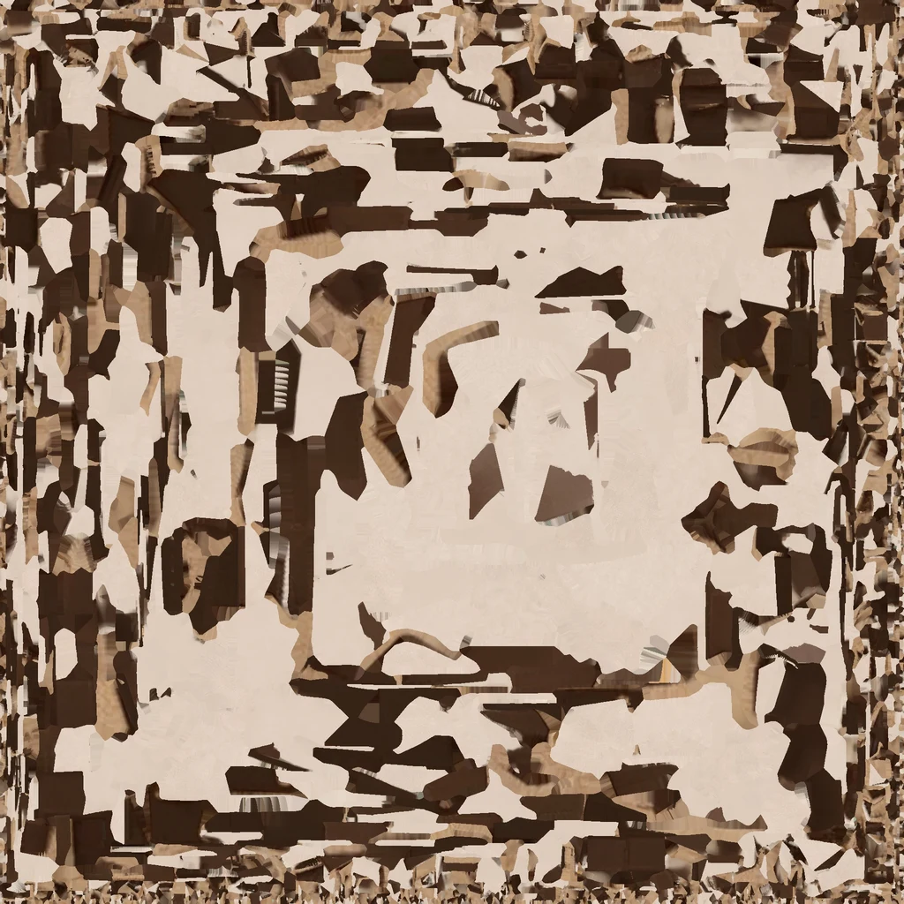
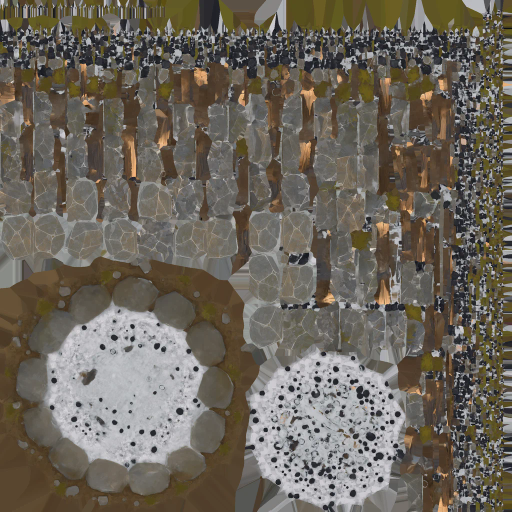

Twelve existing housing, tent and campfire models: 140 → 35 MiB of RGBA8 image pixels. Geometry, UVs, animation and material bindings are identical. These are calculated image budgets, not measured total browser memory.
The ordinary game is unchanged. The candidate requires compactModels=1 and the existing Low quality setting at scene creation.
Use one game tab at a time and reload fully between comparisons. Both versions must use the same campaign and Low setting.
Full scene appearance, sustained memory and the reported browser crash remain to be checked on a physical device.
| Source | Original image budget | Compact candidate |
|---|---|---|
| Human source (one loaded LOD) | 48 MiB, shared by residents | Unchanged |
| General outfit source | 32 MiB, shared by matching residents | Unchanged |
| Other garment/shoe sources | 16 MiB each, when loaded | Unchanged |
| Nine housing/Farmyard assets | 12 MiB each | 3 MiB each |
| Farm Homestead house | 8 MiB | 2 MiB |
| Tent / Campfire | 12 MiB each | 3 MiB each |
| Cattle | 5.25 MiB per loaded variant | Unchanged |
| Goat / Pig / Sheep | 4 MiB per loaded variant | Unchanged |
These show actual colour atlases at equal display size, not rendered scene screenshots. Normal and material-property images are also reduced. No polygon simplification or lighting change is applied.




